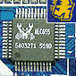
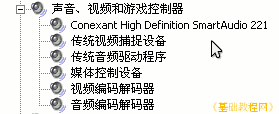
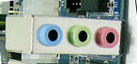
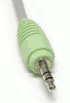

硬件基础教程
作者：TeliuTe 来源：基础教程网
声卡是用来输出声音的，可以把数字信号转为声音电流，下面我们来看一个练习；
1、声卡
1）声卡分为独立声卡和集成声卡，独立声卡的芯片单独在一个插卡上，集成声卡的芯片放在了主板上；

2）常见的集成声卡类别有AC'97 和HD Audio，后者是新一代音频规范，
可以在“我的电脑-属性-设备管理器”中，查看对应的设备驱动程序；

3）声卡输出的插孔主要有耳机/音箱插孔，颜色是绿色，麦克风插孔颜色是红色，此外还有线路输出和输入插孔，字母分别是 Line Out/In

在插耳机或音箱时，只要把颜色对上即可，红的插红的，绿的插绿的，也可以看插孔旁边的标记；

2、声卡维护
1）机箱一般有前后两组声音插孔，如果前面的没有声音，可以试试后面的；
2）声卡需要安装正确的驱动程序，独立声卡有单独的驱动光盘，集成声卡一般在主板驱动的Audio文件夹中；
3）HD Audio 有一个设置程序，可以调整声音的输入和输出，是前置还是后置插孔，可以进入控制面板后进行设置；
4）麦克风插孔和Line In 插孔都可以用于录音，常用的是接上麦克风或话筒来录音或唱MTV；
本节学习了的声卡的基础知识，如果你成功地完成了练习，请继续学习下一课内容；
本教程由86团学校TeliuTe制作|著作权所有
基础教程网：http://teliute.org/
美丽的校园……
转载和引用本站内容，请保留版权信息和本站链接。